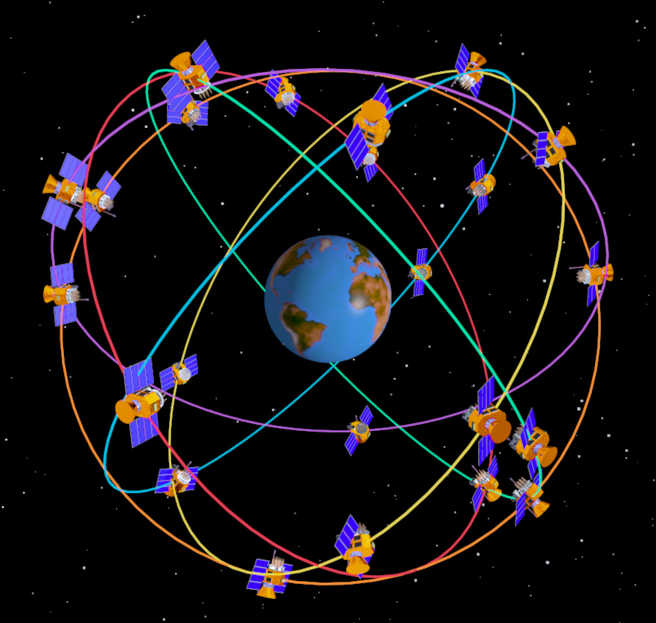
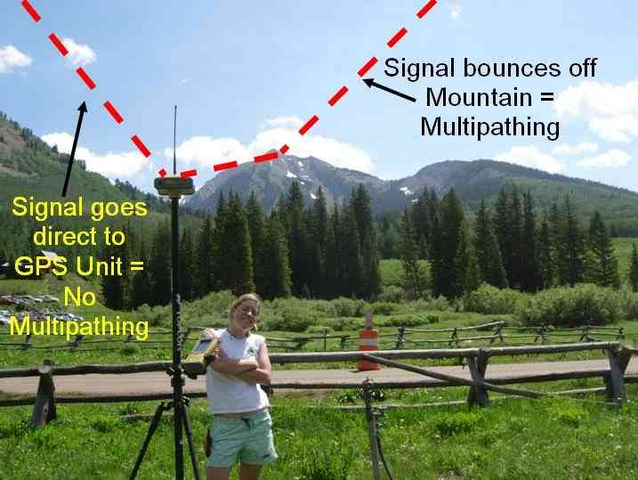
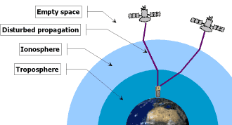

GPS - How it Works¶
GPS system is a Global Navigation Satellite System (GNSS).

Most civil GPS receivers are using pseudorange data (C/A code) available on GPS L1 channel (1575.42 MHz) and optionally they can receive SBAS DGPS corrections giving meter precision.
{kind=link}
Advanced and expensive civil GPS receivers can use the previous method plus carrier phase smoothing, carrier phase corrections (RTK) as well as L2 channel P(Y) code semi-codeless tracking (1227.60 MHz) for realtime local ionospheric corrections giving centimeter or even millimeter precision.
{kind=link}
Some even more advanced GNSS receivers can combine DGPS and RTK corrections and can receive other GNSS satellite constellations (GLONASS and GALILEO) and other channels (L2C, L5…) at the same time to enhance precision and fix reliability.
Military GPS receivers are able to decode the P(Y) code available on L1 and L2 channels giving ten times more precision in realtime compared to a pseudorange basic solution.
GPS multipathing¶
Multipathing is causing GPS position errors that are difficult to detect and compensate for. Multiple GNSS receivers are better suited to filter out multipathing thanks to a higher number of visible satellites at the same time.
{kind=link}
{kind=link}


GPS disturbed signal propagation¶
Ionospheric perturbations and magnetic storms (solar activity) can cause signal delays. This can be partially compensated using SBAS and L1 / L2 decoding.
{kind=link}

Decoding L1 and L2 channels at the same time do allow realtime ionospheric corrections through a differential technique. Unlike SBAS broadcasted ionospheric corrections, this method gives a better match to local ionospheric conditions.

New channels (L2C, L5) for civil use will enhance signal acquisition and position precision as soon as new satellites constellations will be complete ( 2015 - 2020 ).
GPS performance data for different scenarios¶
Those values can be thought as a basis to understand GPS limitations.
As a general rule only clear sky view is safe enough for Auto missions !
GPS 3D precision :
Free Horizon (clear sky view): 2.5 m
Extreme Multipath (Backyards or between buildings flights): 26 m
Indoor: 55 m
GPS Availability :
Free Horizon (clear sky view) : 99%
Extreme Multipath (Backyards or between buildings flights) : 83 %
Indoor : 14 %
DGPS corrections¶
DGPS corrections are using pseudorange data only. SBAS is a form of DGPS correction freely available from one or more geostationary satellites.
Each region of the world has a localized SBAS system : WAAS for America, EGNOS for Europe, MSAS for Japan.
DGPS corrections give meter precision (free services) or decimeter precision (paying services)
{kind=link}
RTK corrections¶
RTK corrections are using carrier phase informations and needs costly advanced GPS as well as a RTK base station or a Network of RTK base stations broadcasting corrections over a modem or Internet through the RTCM protocol.
{kind=link}
RTK is easier to use with slow motion or static applications (like surveying or farming) and give centimeter or millimeter precision.